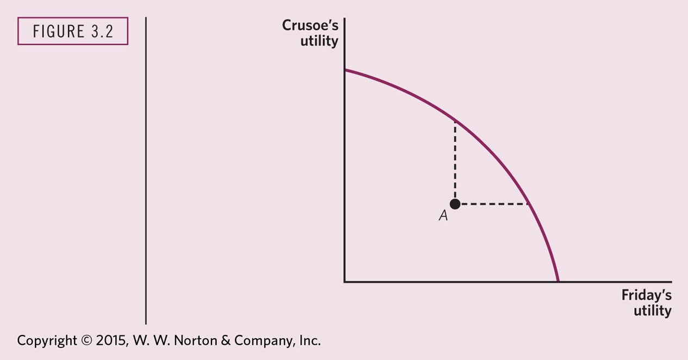
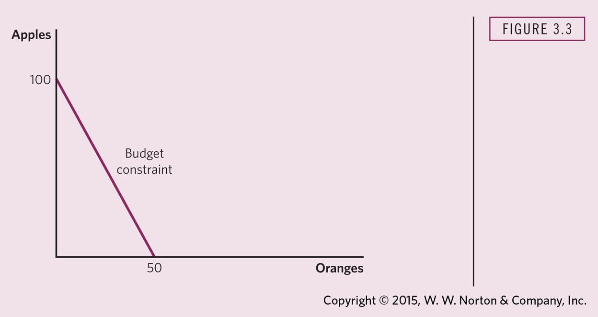
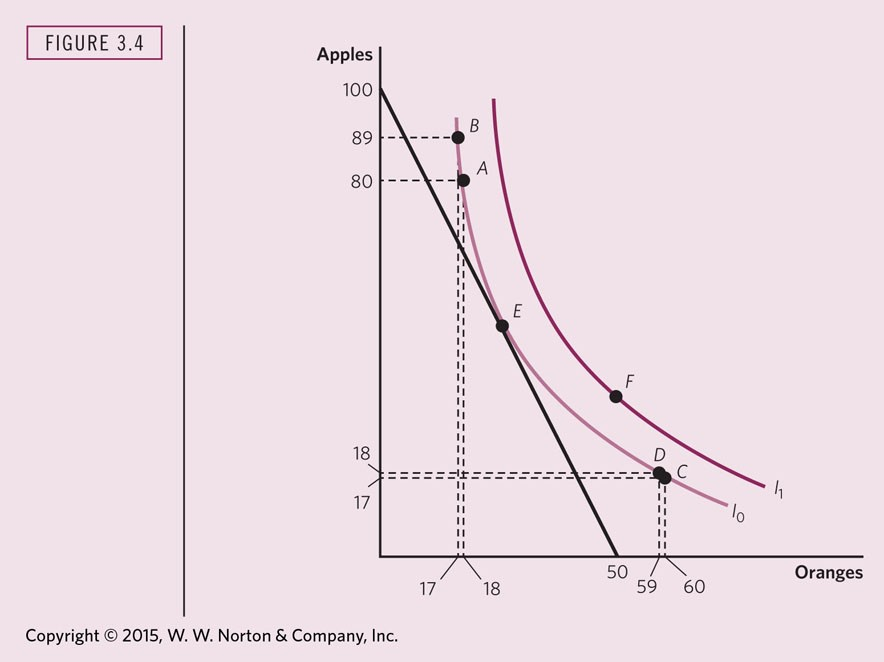
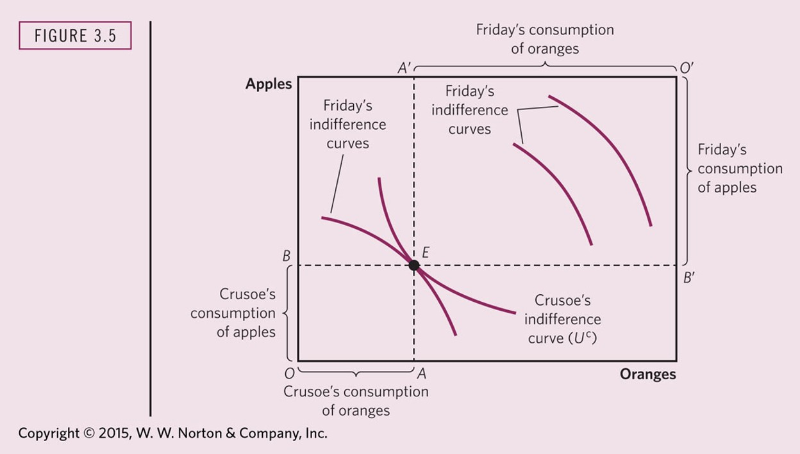
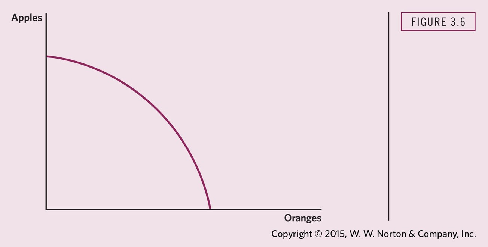
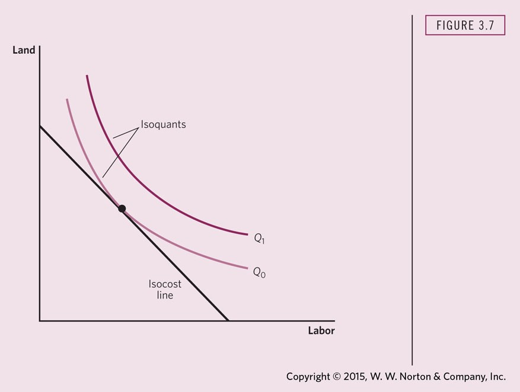
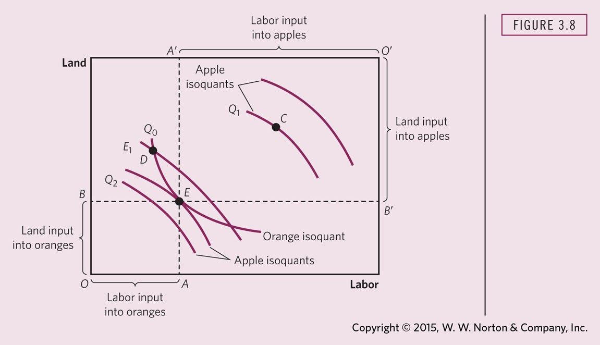

Fall 2026
Research Interests:
Course I teach:
Economic approach to public problems
Stiglitz, Josepf E. and Jay K. Rosengard (2015), Economics of Public Sector, W. W. Norton & Co., 4th
W1 Criteria → W2 Conversation → W3 Analysis → W4 Memo → W5 Summarize → W6 Respond → W7 Bibliography → W8 Purpose → W9 Outline → W10 Audience → W11 Exec Summary → W12 Brief




Crusoe’s and Friday’s consumption of apples and oranges



Requires that the Marginal Rate of Transformation (MRT) between two goods in production equals consumers’ Marginal Rate of Substitution (MRS) between the two goods in consumption.